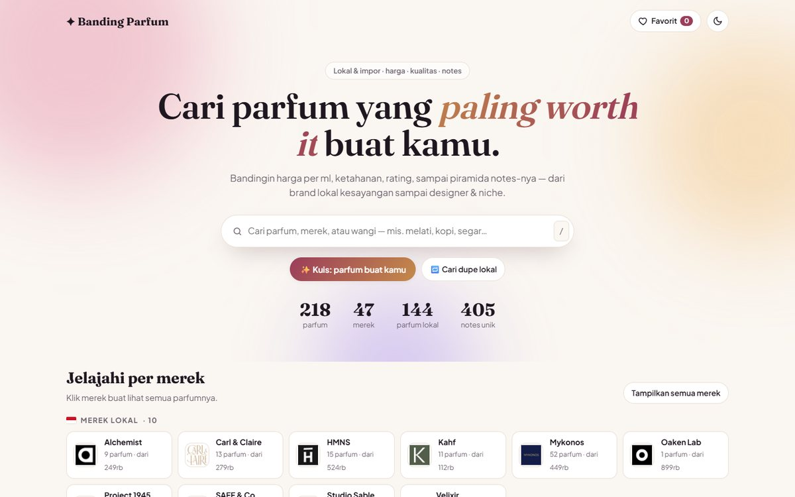

Web App · Proyek pribadi
Banding Parfum
Website statis untuk membandingkan 218 parfum lokal dan impor dari 47 merek. Tidak perlu server: semua data dan logika berjalan di browser.
- Filter merek, gender, family, acara & cuaca, harga, notes, dan favorit.
- Pencarian bahasa Indonesia yang toleran typo, plus kuis rekomendasi 5 pertanyaan.
- Cari dupe lokal dari parfum impor, lengkap dengan persen penghematan per ml.
- Bandingkan hingga 4 parfum dan cari parfum mirip berdasarkan kesamaan notes.
- Mode gelap dan link beli langsung ke Tokopedia dan Shopee.